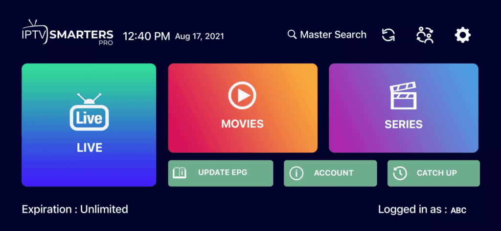

Guide d'Installation
Soyez opérationnel en quelques minutes. Suivez nos tutoriels premium étape par étape pour configurer Plex Plus sur n'importe quel appareil.
Fire TV Stick / Amazon Firestick
Installer l'application Downloader
Accédez à l'écran d'accueil de votre appareil, sélectionnez Rechercher et tapez "Downloader". Sélectionnez l'application et cliquez sur Télécharger/Obtenir.

Activer les sources inconnues
Allez dans Paramètres > Ma Fire TV > Options pour les développeurs. Activez "Installer des applications inconnues" et réglez-le sur OUI pour l'application Downloader.
Télécharger IPTV Smarters
Lancez Downloader et tapez l'URL suivante : https://www.iptvsmarters.com/smarters.apk. Cliquez sur Go puis sur Installer lorsque vous y êtes invité.

Connectez-vous et commencez le streaming
Ouvrez IPTV Smarters Pro, sélectionnez "Login with Xtream Codes API" et entrez le nom d'utilisateur, le mot de passe et l'URL envoyés dans votre e-mail.
Android & iOS (Mobile/Tablette)
Télécharger l'application
Recherchez "IPTV Smarters Pro" (Android) ou "Smarters Player Lite" (iOS) sur le Google Play Store ou l'App Store.
Sélectionner l'API Xtream
Ouvrez l'application et choisissez l'option "Login with Xtream Codes API".

Entrez vos coordonnées
Saisissez vos identifiants d'abonnement. Après avoir cliqué sur "ADD USER", attendez un moment que le contenu se synchronise.
Smart TV (Samsung & LG)
Ouvrir le magasin de contenu
Accédez au Samsung Smart Hub ou au Magasin de contenu LG et recherchez "IPTV Smarters Pro".
Installer et exécuter
Une fois l'application installée, ouvrez-la et sélectionnez "Login with Xtream Codes API".
Connexion
Entrez les identifiants fournis après votre achat pour profiter de la TV en direct en 4K.
Windows PC / Ordinateur portable
Télécharger l'application Windows
Téléchargez l'exécutable officiel IPTV Smarters Pro pour Windows depuis notre centre de ressources.
Installation
Lancez l'installateur et ouvrez l'application depuis votre bureau. Sélectionnez la connexion Xtream Codes API.
Ajouter un abonnement
Entrez votre nom d'utilisateur et votre mot de passe uniques. Cliquez sur "Add User" pour commencer à regarder immédiatement.
Configuration KODI (PVR IPTV Simple Client)
Accéder aux options de la TV
Lancez Kodi et sélectionnez "TV" dans le menu de gauche.
Installer le client PVR
Sélectionnez "Enter Add-on Browser" et trouvez "PVR IPTV Simple Client" dans la liste.
Configurer l'URL M3U
Cliquez sur "Configure", allez dans l'onglet Général et collez l'URL M3U que nous avons envoyée à votre e-mail.
Charger et jouer
Attendez que les chaînes se chargent. Vous pouvez maintenant accéder à tout le contenu premium directement depuis le menu principal de Kodi.
Boîtier MAG (250, 254, 256 etc.)
Accéder aux paramètres du système
Allez dans Settings > System Settings > Servers > Portals.

Définir les détails du portail
Entrez "Plex Plus" comme nom de portail et collez l'URL du portail fournie dans votre e-mail.

Redémarrer et se connecter
Cliquez sur OK pour enregistrer, puis redémarrez votre appareil. Votre adresse MAC doit nous être fournie pour l'activation.